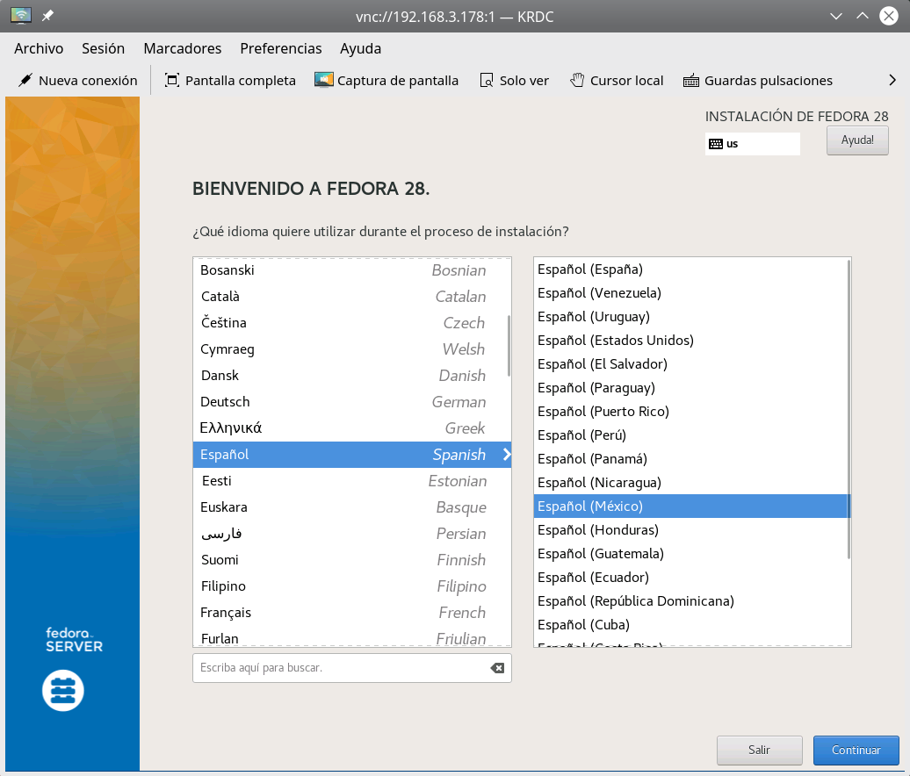
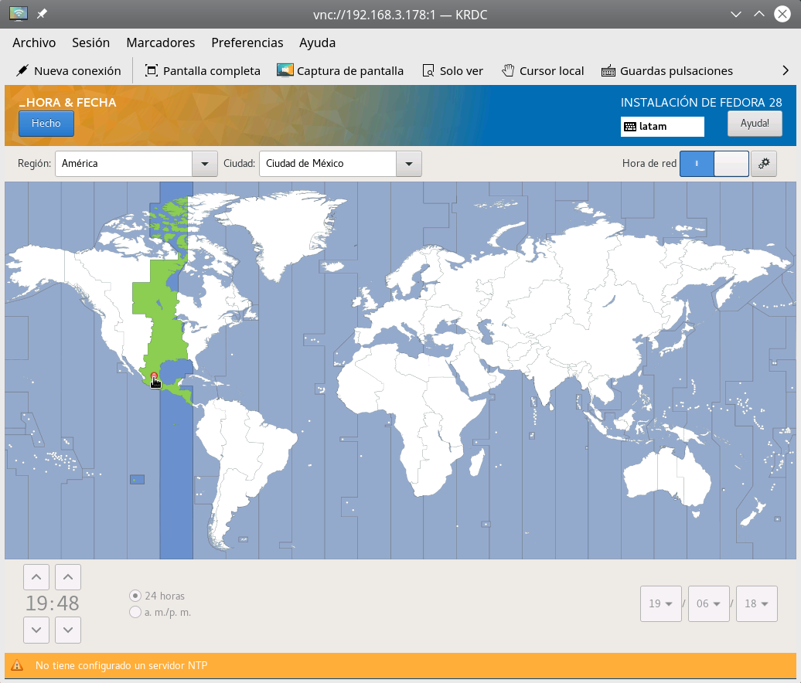
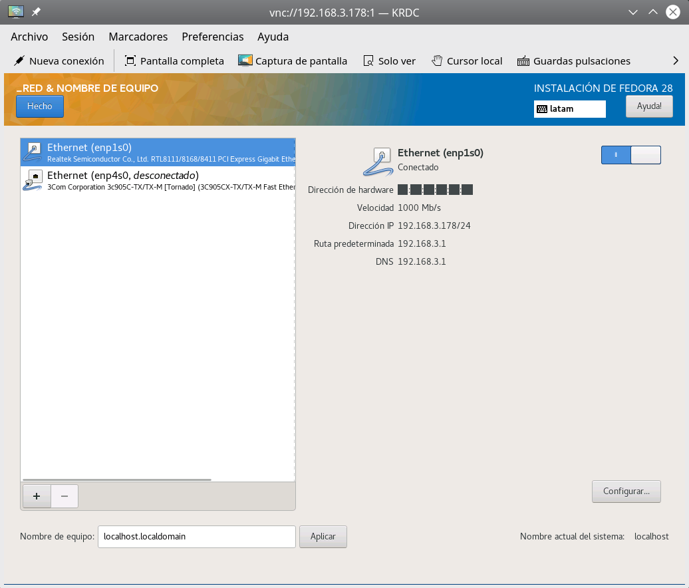
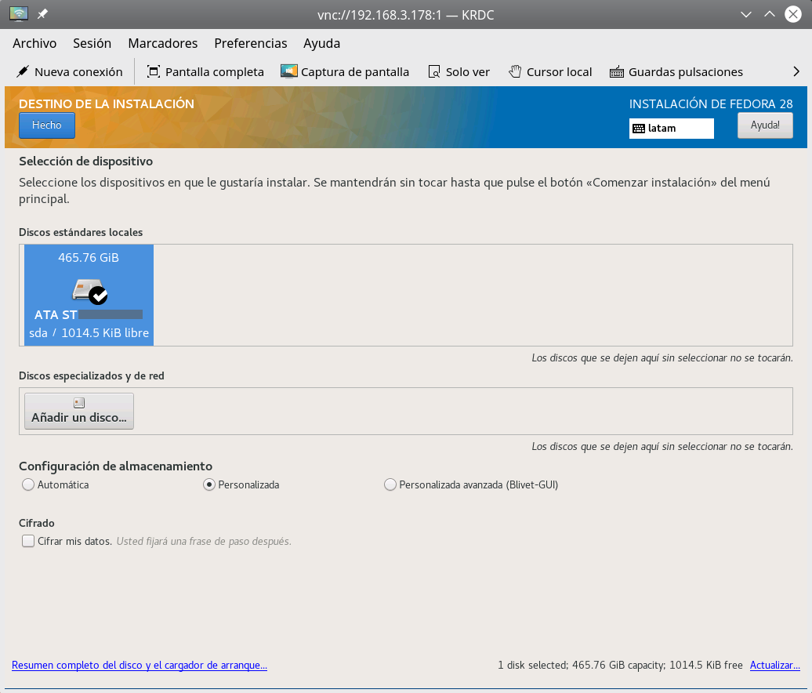
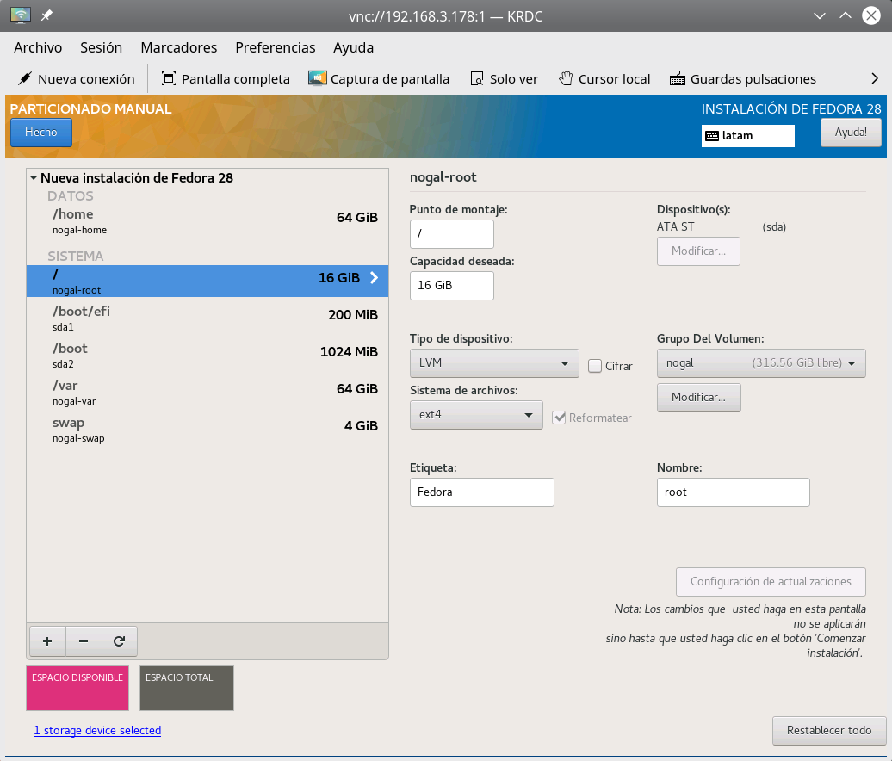
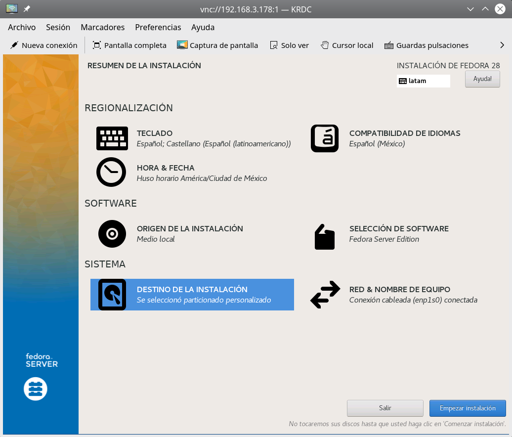
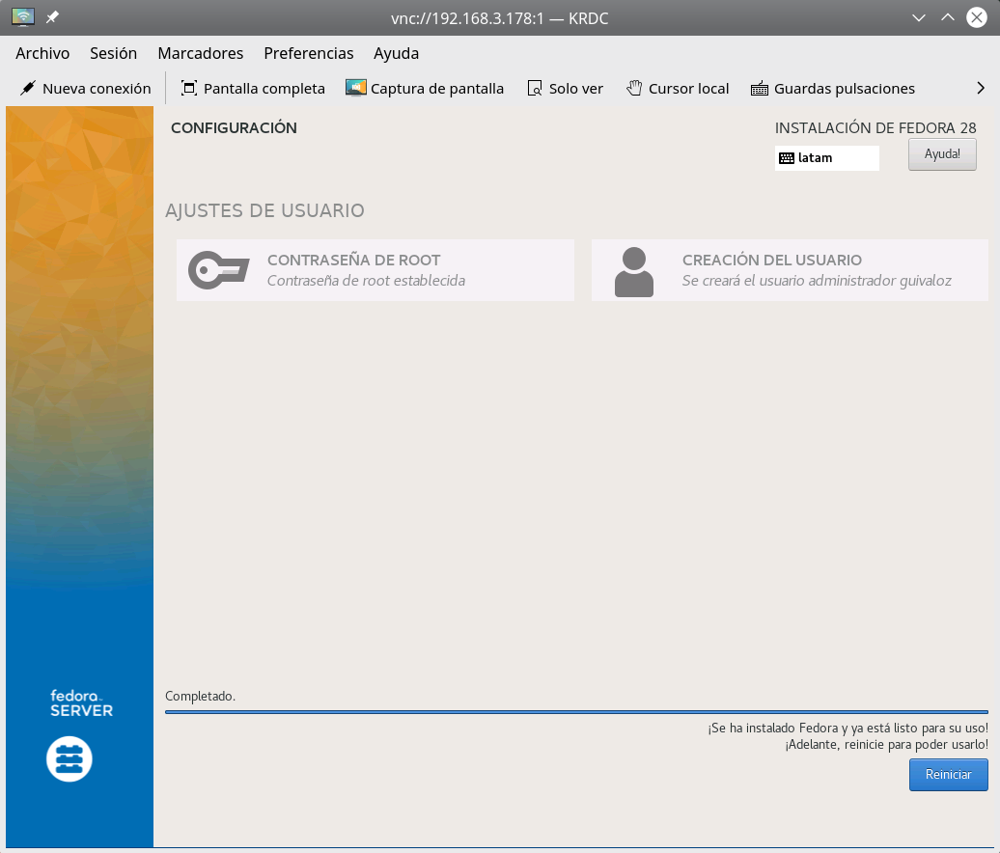

Instalación de Fedora Server 28, parte 1, instalación
Primeros pasos para la instalación de un servidor con Fedora Server 28.
20 June 2018
Acerca de Fedora Server
Fedora Server es un sistema operativo GNU/Linux poderoso y flexible que incorpora las mejores y últimas tecnologías para servidores.
Sobre esta serie de apuntes
Detallaré la instalación y configuración de un servidor que haga las funciones de DHCP, DNS, Proxy y servidor de archivos SAMBA para una red local.
- Parte 1, instalación. Justo la página en la que se encuentra.
- Parte 2, configuración básica de red
- Parte 3, servicios DHCP y DNS
- Parte 4, muro de fuego para ruteador
- Parte 5, proxy Squid
- Parte 6, configuración del proxy en los clientes
- Parte 7, servidor de archivos SAMBA
ADVERTENCIA
Es obvio que el procedimiento de instalación borrará los contenidos del disco duro y memoria USB que utilice. Use componentes nuevos o que no tengan información que necesite.
Su servidor usó un modesto servidor que consta de una tarjeta madre micro con un procesador Intel Celeron J1800 sin ventilador, tiene un dispositivo de red ethernet incorporado y una ranura PCI. Además de 2 GB de memoria RAM, un disco duro SATA de 500 GB y una segunda tarjeta de red ethernet. Así, un dispositivo de red se conectará al modem que brinda Internet y el otro a la red local.
El propósito de estos apuntes es contribuir a compartir el conocimiento del Software Libre sin ánimo de lucro. No me hago responsable por pérdidas, fallas o daños.
Descarga y preparación
Para preprarar el medio de instalación vía USB descargue Fedora Server como un archivo ISO e inserte una memoria USB de una capacidad mayor al tamaño de ese archivo. Al momento de escribir este apunte, el archivo ISO es Fedora-Server-dvd-x86_64-27-1.6.iso
Ejecute fdisk como root para saber cuál dispositivo es la memoria USB...
# fdisk -l
En mi caso es /dev/sdc
Para copiar el contenido ISO a la memoria USB y hacerla booteable ejecute como root...
# dd if=Fedora-Server-dvd-x86_64-27-1.6.iso of=/dev/sdc status=progress
Sea paciente, toma buen tiempo. Al término asegure de no dejar partes sin copiar con...
# sync
Extraiga la memoria USB e insértela en el nuevo servidor estando apagado.
Instale remotamente
Es posible instalar a distancia vía VNC, para tomar imágenes y tener a la mano la documentación (como estos apuntes). Más detalles en Installing using VNC
- Conecte el dispositivo de red ethernet que haya elegido para red local a la red local (vaya redundancia).
- Encienda el equipo ordenando elegir el dispositivo USB como medio de carga del sistema. Por lo general se consigue presionando
F12oESC. - Cuando arranque GRUB presione
epara editar y agregueinst.vncen la línea que cargará el kernel linux.
Al terminar el arranque le mostrará en pantalla la dirección IP y el puerto para conectarse vía VNC. Elija el cliente VNC que prefiera, en estas imágenes se usó RNDC que es parte de KDE.
Anaconda - Idioma

Anaconda - Hora y fecha

Anaconda - Red
Note que desde aquí se identifican los dos dispositivos de red.

Anaconda - Destino
Elija el disco duro a donde instalar.
Y, como prefiero hacer las particiones a mano, activo la opción Personalizada de Configuración de almacenamiento.

Al presionar el botón Hecho cambiará a la pantalla de particionado.
Anaconda - Particionado
Asigno 16 GB a la raíz de Fedora y separo /var a su propia partición de 16 GB. El área de intercambio swap puede ser una y media o dos veces la cantidad de memoria RAM instalada.
Un detalle adicional es modificar el grupo del volumen para que ocupe el tamaño máximo, es decir, que use todo el espacio que queda en el disco duro. Esto no significa que vayamos a ocupar todo el disco en este momento, sino que más adelante podamos crear nuevas particiones lógicas sin cambiar las volúmenes (consulte sobre LVM).
Por último, prefiero ext4 como sistema de archivos en las particiones root, var y home.

Anaconda - Resumen
Revise todo lo anterior y de clic en Empezar instalación.

Anaconda - Instalación completada
Defina la contraseña de root y su cuenta de usuario.

Reinicie el equipo y retire la memoria USB para que arranque por primera vez Fedora Server.
Ingrese remotamente vía OpenSSH
Edite /etc/ssh/sshd_config y active estas líneas para permitir que podamos accesar remotamente por ssh...
ListenAddress 0.0.0.0
Reinice el daemon.
# systemctl restart sshd
Tome nota de la dirección IP que tenga el servidor en la red local.
# ip addr
E ingrese remotamente (cambie 192.168.n.m por la dirección IP obtenida).
$ ssh 192.168.n.m
Actualice
Si usa un proxy agregue esa configuración a /etc/dnf/dnf.conf (cambie proxy.redlocal.lan por el nombre o dirección IP de su proxy).
proxy=http://proxy.redlocal.lan:3128
Realice una actualización general, ejecute este comando como root.
# dnf upgrade
Después de la actualización podría tener una nueva versión del kernel linux, así que reinice para que ya la use.
# systemctl reboot